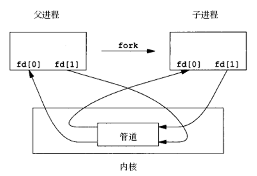

Linux进程间通信方式
更新日期:
文章目录
Linux主要的通信方式
- 管道(pipe)和有名管道(fifo)
- 信号(signal)
- 消息队列
- 共享内存
- 信号量
- 套接字(socket)
管道
- 管道是单向的、先进先出的，它把一个进程的输出和另一个进程的输入连接在一起。一个进程（写进程）在管道的尾部写入数据，另一个进程（读进程）从管道的头部读出数据。
- 数据被一个进程读出后，将从管道中删除。其它读进程将不能再读到这些数据。管道提供了简单的流控制机制，进程试图读空管道时，进程将阻塞。同样，管道已经满时，进程再试图向管道写入数据，进程将阻塞。
- 管道包括无名管道和命名管道，前者用于父进程和子进程间的通信，后者可用于运行于同一系统中任意两个进程间的通信。
管道的创建
无名管道由pipe()函数创建：
1int pipe(int filedis[2]);当一个管道建立时，它会创建两个文件描述符：filedis[0]用于读管道，filedis[1]用于写管道。
管道关闭
- 关闭管道只需要将这两个文件描述符关闭即可。可以使用普通的close函数逐个关闭。
无名管道使用特点
- 它只能用于具有亲缘关系的进程间通信(如父子进程)
- 它是半双工的通信模式，具有固定的读端和写端
- 管道可以看做是一种特殊的文件，对于它的读写可以使用普通的read和write等函数。但它不是普通的文件，只存在于内核的内存空间中。
无名管道创建实例：1234567891011121314151617int main(){ int pipe_fd[2]; if(pipe(pipe_fd)<0) { printf("pipe create error\n"); return -1; } else printf("pipe create success\n"); close(pipe_fd[0]); close(pipe_fd[1]);}
无名管道的读写
- 管道用于不同进程间通信，通常先创建一个管道，再通过fork函数创建一个子进程，该子进程会继承父进程所创建的管道。

命名管道
- 命名管道和无名管道基本相同，但也有不同点：无名管道只能有父子进程使用；但是通过命名管道，不相关的进程也能交换数据。
命名管道的创建
12345int mkfifo(const char* pathname,mode_t mode)//pathname:FIFO文件名//mode：属性（见文件操作章节）
FIFO出错信息
- EACCES (无存取权限)
- EEXIST (指定文件不存在)
- ENAMETOOLONG (路径名太长)
- ENOENT (包含的目录不存在)
- ENOSPC (文件系统剩余空间不足)
- ENOTDIR (文件路径无效)
- EROFS (指定的文件存在于只读文件系统中)